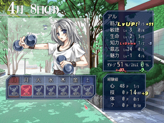
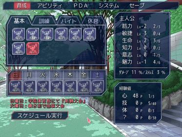

シルバーセカンド開発日誌
2008年10月
■
2008-10-31 (金) ウディタVer1.07アップ！▼ペンタブレットが壊れたウルフです。
7年くらい使ってるんでそろそろ壊れるとは思ってました。困った。
今回はウディタのバージョンアップをいたしましたのでご報告！
演出周りの機能が大幅強化されました！
WOLF RPGエディター公式サイト
ということで、1.07へのバージョンアップで
できるようになった演出をご覧あれ！
以下は、マップのズームとピクチャのズーム機能の使用例です。
単純な演出ですが、迫力を増したりするのには便利だと思います。
他にもマップを直接書き換えたりする機能が追加されましたので、
組み方次第でいわゆる「不思議のダンジョン」を作ったり、
壁を調べると隠し部屋が突然出てくる演出、
雪道歩くと足跡が付く演出など、
様々な応用が可能となっております。 ■
2008-10-27 (月) 顔自作へのご意見▼
「シルフェイド学院物語において、
主人公の顔を自作可能にするかどうか」
の議論に対するご意見を非常にたくさん頂きました。
非常によく考えられたご意見を頂いたりして、
何から何まで感謝の極みです！
頂いたご意見の一例を以下にご紹介。
【顔自作がいい】
＞自作に一票！
＞このゲームで活躍するのが「あなた」なら、ゲームとしては
＞やはり顔自作有りが好ましいとは思います。
＞自作顔希望派です。
＞NPCと顔が被るなら逆にNPCの顔をランダム化して被らないようにすれば？
＞自分は自作の方がいいですね
＞時間と労力があったら創ればいいんじゃ？
＞主人公を作成する時に、顔有りか顔無しか選べるとうれしいなぁ
デメリット対策を一緒に書いてくださる方もおられました、9通でした。
【顔固定でいい】
＞デフォ顔のみでいいです。
＞デフォ顔でも愛着が湧くと思いますよ。
＞固定の方がいい
＞開発速度が落ちるならやらなくてもいいと思います。
＞顔変えられなくても良いと思うです、または2、3種類から選ぶくらいで。
＞人生ゲームなどで同じ顔出てきた！？
＞ってなったとき悲しい気がするので×
＞ゴンベエやナナシが、名前も台詞もないのにFAEの主人公に据えられたような
＞愛され方がなくなるのは…二周目や整形外科で変えられてるならいいですが
＞最初はデフォ顔の方がいいと思います。
＞自分で作ると自分も作者側みたいな感じになって感情移入しずらい
11通＋メールと掲示板で2通ほど頂きました。
変えなくていい派の人がちょっと多め。
色々対応策なども考えてくださった方が多く、
非常に参考になりました。
「MMORPGみたいなのと違って固定物語の主人公なら、
特に自作しない方が作者のイメージに合ったまま遊べてよい」
とか、そういったご意見もありましたね。
とりあえず別に多数決ってワケでもないので、
皆さんに満足していただくのなら
当然うまいこと両方取り入れた方がいいわけで、色々考え所です。
それにしてもずっぱり分かれたなあ！
でも、自由度が低めの方がいいという案が
意外に多いのはすごく勉強になりました！
以下はその他のご意見です。
＞主人公の顔自作で重くなるなら、
＞合成後の画像を作ればいいのでは？
このご意見を10通くらい頂いてしまったのですが、
私の今の技術では難しそうです。
ウディタ・グラフィック合成器と作ってきたのですが、
C++でPNGの透過を維持したままの画像合成＆出力は、
なかなか簡単にできる印象ではありません。
できるようになったら、
他にも色々やれる幅が広がりそうなんですけれどね。
＞自作にすると育成グラフィックと
＞合わなくなっちゃうのでちょっと。
＞面白そうだと思いますが前述の育成CGとかで出るキャラと
＞かけ離れちゃうと違和感はあるかも。
計3通頂きました、そうなんですよ！
「写真はイメージです」で通してもいいんですがちょっと！
＞どんな感じで自作キャラ編集ができるかわかりませんが、
＞顔パーツを引き伸ばしたり位置を変えたりできたら
＞同じ顔になりませんよね。
いい案だと思うのですが、センスが求められすぎなので
普通の人にはキツいんですよコレ。
何にせよ、パーツ自体の調整は
色変えくらいにとどめようと思います！
3Dで作れるなら、モーフィングとか
何だとかで作れるかもしれませんけども。
＞主人公の顔について、プレイヤーの自由に出来る部分を
＞少なめにすれば色々とやりやすいのでは？
これも分かります。髪型を3種類だけに限定するだけでも
色々と楽になりそうです。
＞主人公と同じ顔のNPCがいたら、自動的に（NPCの）顔を
＞1パーツだけ変えるようにすればどうでしょう？
それもアリだと思うんですが、パーツの一つや二つ変えてもあんまり
変わらないのが難点です。
マユ毛だけ違うキャラが出てきても一緒ですしね。
ついでに、ユーザーさんの手で
オリジナルキャラを登録できるシステムなので、
登場時に勝手に顔が変わっててもイヤだと思うんですよ、うん。
＞非人間キャラも主人公に出来ると嬉しいです
ブフォッ、さらに押し進めよ意見が！？
でも労力が少しでも余ってるなら、
それくらいの意気込みは絶対要ると思います！
押して押すのが良作の条件。
＞胸のサイズが設定できたら素敵だな、と思いませんか？
つまり爆乳の男の子がご所望なんですね！！
そして保健体育の授業中「性について」のテーマでネタにされる主人公。
いやまあ実際にいたら色々困ることも多いんでしょうけれど。
ついでにGoogleで「"爆乳の男の子"」で検索したら
「"爆乳の男の子"との一致はありません」でした、
これは新ジャンルの予感！？
という感じでした。とりあえずのスタンスとしては、頂いたご意見を参考に
・主人公顔自作機能自体は余裕があれば入れる
・顔自作で可能な操作は、パーツ選択 ＆ 色変更の2つ。
・顔自作は二周目特典にするか、一周目から理容室で髪型だけ変更可に
→ 二周目以降に気分を一新するための
要素と考えても悪くないと思います！
これなら一周目は育成画像とのマッチングができますしね！
というあたりで行くのがよさそうな印象です。
一周クリアで一通りモブNPCの顔も把握できますし、
元より一周で終わるゲームにはならなさそうですし。
なお、主人公の顔グラフィックは、ステータス画面に出てくる顔と
戦闘時のキャラクターグラフィックに影響する予定です。
それ以外は、主人公のセリフは基本的にないので会話中に顔は出ず、
あんまり変わらない、といえば変わりません。
クリア後のオンライン名簿（※予定）に
顔が載ったりするくらいでしょうか。
クリア状況やステータス、取得スキル・そのプレイで攻略したキャラ、
などを見ることができる！って感じのを考え中です、お楽しみに！
にしても、自作キャラできるよ！
って言われるとピンクのツインテール男の子とか、
名前が「ヒャッハー」というモヒカンの女の子とか
独特なのが出てくるんでしょうね。
今から恐怖です。■
2008-10-23 (木) 主人公顔自作について▼前回の記事で、シルフェイド学院物語の主人公の顔について、
「顔は、パーツ合成で作成できるようにするか
どうするか迷ってるところです」
と言いましたが、やっぱり引き続き迷っています。
というのも、主人公のキャラ顔を、パーツと色を選んで自作可能に
することについては、実は今まで
ナシにしようかなと思っていたんですが、
タクミさんにプロトタイプをお見せしたところ、
「顔自作入れたら面白そうじゃない？」
って言われたのでどうしようかなあと思ったわけでして。
って言ってる間にもコメントで入れてくれた方が嬉しいですという
内容をいただいてしまっているんですが！

パーツ合成顔グラフィックの例（女子）。
髪色や目の色の変更も可能です。
パーツ分け＆前後設定がメッチャ大変でした。
皆さんは、自作可能か固定かどっちがいいですか？
今パッと思いついたメリットとデメリットには、
以下のようなものが挙げられます。
【主人公の顔自作のメリット】
・やっぱり愛着が湧く！後々自キャラを自慢したりするなら
こっちがいいでしょ！
・自作キャラ同士の対戦機能とか付けるなら、これがあった方が面白い。
同じ外見同士のキャラ対戦ばっかりになったら、ちょっとねえ。
【主人公顔自作のデメリット】
・途中で自分と同じ顔のNPCが出てきてショック！という事態がある。
→ 「ゲーム内で顔が変更できる」で対処できるかもしれない。
例えば、理容室だとか整形外科とか
あったりしてお金払うと変えられるとか。
でもむやみに顔変更できない方が
アイデンティティ生まれていい面も。うーん。
ベストな対応は「私が主人公専用のパーツを作る」ことですが、死ねる！
・万が一、私がちょっとその気になってイベント画像作ろうと思った場合。
主人公の映像が首から下だけの登場になりそう。まあどうせ
イベント画像作る機会なんて、
「双眼鏡覗いたらシャワーシーンだった！」
くらいしかないんですが。
・システム的な意味で、作るのがちょっと大変になる
・パーツ合成顔画像は同時ピクチャ表示枚数が多いので処理が重くなる。
いっぱい画像を出しても平気な場面に限定して主人公顔を表示するなど、
使用時にはちょっと工夫が要りそう。
整理してみると、デメリットはほとんど自分の作業量の問題です。
この影響で、どの程度完成が遅れるか、まだ不明瞭なのが
何とも言えませんけれど、やれないことはなさそうです。
顔自作可能にするかデフォ顔のみにするか、どうしたもんかなあ。
以下は頂いたコメントの一部と余談。 ▼追記を開く▼＞主人公の女の子、磨かなくても僕的には美人コンテストで
＞一位なんですけどどうすればいいですか？
がんばってください！
というか、私が描いた方の女主人公ちゃんが
美人コンテストブービー級になったりしないようガンバリマス！
＞以前「顔グラをパーツ化することによる労力の削減」
＞みたいな感じで 書かれていましたが、
＞これをウディタのキャラ合成ツールみたいに
＞パーツを組み合わせてオリキャラを作成し、二次創作で使えたらなと
＞思っているのですが、いかがでしょうか？
＞ご検討の程宜しく御願いいたします。
パーツ合成キャラ顔は、半分は皆さんが
好きなキャラを作れるようにするためにと考えていた要素なので、
もちろん二次創作で作る＆使うことは可能ですよ！
なので、シルフェイドキャラと全く関係ない
新シナリオ＆世界観を作ったりも可能！
＞ぬおっ！背景がキレイだ！っと思ったらタクミさんだったか…
はい、タクミさんです。音楽も作れるし絵も描けるしゲームも作れるし、
本当に多芸なお方だと思います。
【余談 曲の長さ】
余談ですが、モノリスフィアの真ハーディア戦は曲が16秒分しかありません。
さすがにボス戦でこれだけ短い曲はそうそうないだろうと思ってたら、
コンシューマ作品でもっと恐ろしいのがありました。
SFC黎明期のRPG「ガデュリン」の
ラスボスの曲が10秒で延々ループだったのです。
しかも何段階も変形するのに第一段階から最終段階まで曲が変わりません、
ループの切れ目もくっきり分かります。
どうすればいいんだ、強い、強すぎる。
個人的には、曲は40秒くらいあればいいかもしれないと思っています。
容量軽いし、作る人もたぶん楽ですしね！
何より、ゲームにおいて移動画面以外で
1シーンが30秒以上続くことがあんまりないような気がします。■
2008-10-19 (日) シル学 育成画面2▼
前回に引き続き育成画面の紹介です。
育成実行画面

育成グラフィックは透子さんが担当してくださっています。
あ、言い忘れてましたが、
シルフェイド学院物語の主人公は「あなた」です！
ゴンベエとかナナシとかそんな呼ばれ方もありますが、
女の子（デフォ状態）は今回ポニテじゃなくて
↑みたいなミドルヘアーで、そしてまな板でもありません！！
設定的には「磨けば美人コンテストで一位になれるくらいの素材」です。
今回世界を救うためには魅力も必要だからという理由で、
神様が万能型の体に作ったわけですね。
完全戦闘重視の幻想譚女主人公とは違うのです。
（ただし男の子はまあ、割とそのまま）
顔は、パーツ合成で作成できるようにするかどうするか
迷ってるところです。
で、引き続きステータスの説明です。
右のウィンドウ、上部と下部に2つありますが、まずは上の方から。
・筋力 ：
パワー、高くなると戦闘で与えるダメージが増加、
スタミナ消費量が減少。
・敏捷 ：
戦闘で、回避率や行動速度が上がる。
何か器用なことをするときにも有効。
・生命 ：
元気さ。高いほど育成による「ダメージ」が減少する。
戦闘中のLIFEも増加。
ついでに戦闘中のスタミナ消費量も減少。
・知力 ：
ひらめきや注意力。テストの点が上がりやすくなる。
新スキルの発生にも影響する？ それは未定。
・意志 ：
ストレスへの耐性。高いほど育成による「ストレス」が減少する。
戦闘では倒れたときに立ち上がれるかどうかの時の回復力がアップ。
・魅力 ：
仕草や話し方も含めた「魅力」を表します。
生活する上で自然に上がっていく好感度の上昇率が上がったり、
会議バトル（仮名）において自分の主張が通りやすくなる。
という感じ！ ただ所属クラスによっては
あまり意味のないパラメータもあるので、
それらを上げることによる利点なども用意したいところです。
たとえば武術ルートの「知力」は基本的に
死にパラメータだけど、上げるとテクニカルな技を
いっぱい覚えられるようになる、という具合にするのも
面白いかもしれません。
で、次に、右下にある「経験値」欄ですが、
これはスキル習得に必要なポイントです。
心・技・体・？ の4種類があり、この4つのポイントを
スキルに応じて消費することで、スキル習得が可能です。
（例：「強打」の習得には技5P+体5Pが必要。
「治癒」の理力には心20P必要、とか）
ぶっちゃけ、参考にするといいよって意見が
大量に来たパワプ●方式なんですが！
でも単純で育成コマンドごとの魅力を出しつつ考えて育成するとなると、
どうにもこの方式に落ち着いてしまいますね。
仮に「武術スキルは武術経験値上げれば手に入る」にすると、
育て方もパラメータも偏ってしまいます
（ただひたすら武術コマンド実行）が、
この方式なら目的のパラメータを上げやすいクラブに狙って入るとか、
そういう攻略の幅もできるので面白そうです。
以下は頂いたコメント。 ▼追記を開く▼＞二次創作キットのテキストファイルから
＞戦闘画面ことはできますか？
シルエットノートでは、戦闘の起動はできません。
シルフェイド学院物語のことでしたら、作者自身が全部
テキストファイルでシナリオや戦闘発生その他のコマンドを
打ち込む予定なので、原作でできることは何でもできる予定です。
＞＞基本・訓練コマンドの代案色々
ご意見いっぱいありがとうございます！
参考になりそうなご意見は、ぜひ検討させていただきたいと思います。■
2008-10-14 (火) シル学 育成画面▼
今作ってるのが下積みなので、どうにもお見せできないし、
自分もそれなりに頑張ってるつもりなのですが
さっぱり進んでる気がしません。
でもこの程度の事で焦るのは、心が弱くなってる証拠に他なりません。
常に、やることだけを、無心で重ね続ける。それだけが重要で、
それ以外のことは笑って受け入れられる強い優しさが欲しいです。
だから今からまた無心で作業。
とりあえずこのしんどさを解決するために、スタッフの人に
「もうすぐシステムのプロトタイプ見せるよ！！」宣言して
自分を追いつめることにしました。
ここを見て下さっている皆さまには、
ある程度ゲームの体裁を整えた状態にできましたら
システム紹介ムービーあたりをお見せできると思いますので、
ご期待下さい。
とりあえず今回はシルフェイド学院物語の育成画面プロトタイプをば。

今回、背景はタクミさんにお願いしています。美麗背景！！
で、画面を見ていただけるとお分かりのように、育成コマンドには、
基本・訓練・バイト・休息の4種類があります。それぞれ、
・基本
無料で実行できる自主的なトレーニング、筋トレとか走り込みとか勉強
・訓練
有料で受けられる訓練/強化。スポーツジム・改造手術・塾など
・バイト
お金を得ることができる育成。
食堂のバイトとか新聞配達とか夜のお仕事。
・休息
ダメージ・ストレスを回復させる育成。
寝る・病院に行く・エステ（魅力＋）。
「基本・訓練」は
何か他に格好いい言い方がないか検討中です。
無料・有料はカッコ悪いしなあ。
ファンタジー版の追加シナリオなど作る場合にも
自然に対応させるためには、なるべく大雑把な意味の単語の方が
いいんですけどね。何がいいかな。
で、それぞれの育成コマンドを一週間それぞれに割り当てていきます。
ここでは日曜から土曜まで全部
「筋トレ」にセットされています。
ちなみに上の基本メニューも全部筋トレ！
選択の余地なく筋トレ強要です、どんだけ筋トレマニアの主人公なんだと。
右のパラメータについての説明は、次回のお楽しみに！
ネタが少なすぎる上に毎度記事が長すぎて読むの大変ですから、
内容をコマ切れにしておこうと思いまして！
色々妄想してみてください。でも見れば分かるかな。
以下は余談。 ▼追記を開く▼
【難易度設定についての小話】
メトロイドフュージョンというゲームには、
こどもモードとおとなモードがあります。
最初見たときは「お、おとなモードですと！？ゴクリ……」
と思いましたが単にこどもモードに比べて
劇中で使われる単語がちょっと難しくなってるだけで、
別にアレやコレや凄いことなんて何もありませんでした、嗚呼……！
（例：こども版「てきの××をやっつけろ！」
おとな版「敵の××を撃破してくれ！」）
ちょっとでも期待した自分が馬鹿だったのを覚えていま――
じゃなくて、物語の難しさも選択できるってのは
ある意味画期的ですね！ ということが言いたくて！
で、年齢別、性別、趣味、特技その他色々に
対応したゲーム出ませんかね！？
同じ物語なのに、アクション好きか
RPG好きかどうかでジャンルが変わるとか。
ないか、ないや。
ふと思っただけで実用性ゼロの案でしたとさ……。
＞Σシズナ＋血便って…サユキにはうんこ成分が！？ああ…
＞サユキもシズナもどっちも同点一位！って位大好きなキャラなんで、
＞製作者様からそういう言葉が出ると悲しいです…Ｔ△Ｔ
＞っていう、私みたいにこの２人好きな人…少ないんでしょうね
シズナは幻想譚の正ヒロイン（人間限定）ですよ！？
一応。地味でしたけど。
サユキはヒロイン予定だったのに、
作ってるシーズン途中で私がちょっと休みも取らずに頑張りすぎて、
とうとう血便発射に至る事件が起きまして、
その体験の印象が強すぎてああいう事態に……。
ファイナル●ンタジー7のエア●スさんがあんなことになったのは、
スタッフさんの間で不幸があったからという
ウワサがあった気がしますし（違うかも）、
作者の体験というのは、どうしても作品に反映されてしまうと思います。
＞（シルフェイド学院物語の）完成予定はいつごろですか？
少なくとも自分が中身に満足するまでは出しません！！
来年春くらい？
今回は真剣にゲームっぽいゲームを
楽しんでいただけるよう頑張りますぞ！
＞（シルフェイド学院物語の）戦闘複雑すぎて、わかりづらいです。
＞ゲーム内でうまいこと説明するのは難しいんじゃ……
わかりました！
ゲーム内で2～3戦もすれば直感的に理解できるように作ります！
といいますかボクシングのシステムは、戦ってる本人からしたら、
ただ相手を殴ってるだけでもちゃんとケリが付くいいルールですから、
そんなに心配なさらずとも大丈夫です！
自分がガチ強かったら、相手をそのまま
ゴリ押しでやっつけちゃえばいいのは変わりません。
なので前回ご紹介したややこしいルールは
「勝てるかどうか分からないときだけ、
ルールを活用しなきゃいけなくなる」
という感じになると思います！■
2008-10-10 (金) ウディコン 眠れる獅子達▼さて不景気な世の中ですが、
この三連休にウディタ作品はいかがですか？
ということで、一ヶ月ぶりのウディタ作品紹介企画！
超今さらですが、有志の方々の手で
非公式ウディタ作品コンテストが開催されていたのでご紹介！
会場は以下のリンクから！
- 非公式ウディタコンテスト Wodicon -(ｱｰｶｲﾌﾞ)

「作品一覧」から各々の作品にアクセスすることができます。
で、第一回はすでに開催済み＆審査済みで順位付けされています。
気になったのだけちょこちょこプレイさせて
いただいたのですが、どれもこれも
普通のRPG（一本道ストーリーRPGという意味で）じゃない
作品ばかりで驚愕！！
かなり個性豊かな作品がそろっているようでした。
フリーゲームの世界では、似たようなものでナンバー1を競うより
オンリー1を競うのが面白い世界だと思っているので、
こういう傾向は嬉しい限り！
なんですが、こんなにたくさんの眠れる獅子が
一体どこに隠れていたのやら！ という驚きもあります。
そういう方々は、たとえウディタがなくても、
いつか何かのツールで作品を作られたとは思うんですが、
ウディタが少しでもきっかけになったのなら嬉しい限りです。
とりあえず「おおっ」と思ったのだけ簡易レビューさせていただきます！
基本的に以下はどれも素材入れ替え/自作などを
しっかり行っていて、割とグラフィックに凝っている作品群でした。
【正当派すばらしい賞】
・DragonTears [作者様サイト/ｱｰｶｲﾌﾞ]
竜人の主人公が繰り広げるレトロ風のRPG、全自作システムです。
非人間キャラ好きーの私には公開前から注目の的だったりしたんですが、
物語も現行レビュー作品の中ではトップクラスのデキかもしれません。
私自身がファミコン世代だからかもしれませんが、
本作品の短いひらがなの文には魂が宿ってるように感じます。
色んな意味でレトロ調がハマってる作品！
「一文を短めに」「漢字を少なめ」に、というのは、簡単でありながら
文章のテンポを上げることができる、とてもいい手段ですよね！
【技術が凄すぎ賞】
・迷宮の町 体験版 [作者様サイト/ｱｰｶｲﾌﾞ]
アクションゲーム。
といってもツクール作品でよくあるアクションじゃなくて
ホンマモンのバリバリなめらかな2Dジャンプアクションゲームです。
無茶しすぎ！
各種パラメータが色々いじれるような汎用性が高いシステムなら、
ぜひ公式でアクションゲーム用基本システムとして
配布させていただきたいくらいのデキ。
【将来が楽しみすぎる賞】
・君が見るこの世界 体験版 [作者様サイト/ｱｰｶｲﾌﾞ]
非人間キャラ大好きの私には大興ふｎ（略）。
魔族っぽい女の子が主人公の俯瞰アクションゲームです。
キャラの移動そのものはウディタの基本機能を利用しているので
割と安心できるスタイルです、コンボが気持ちいいのはベリグー。
ゲーム内の雰囲気も、雲やら鳥の鳴き声やらで
かなり深いところまで作り込まれていて気合いが入ってます。
作者の方の人も絵が上手なお方で、総合力が非常に高くなりそうな逸品！
【その他・ビっと来た作品】
・あたまの中のゆうしゃ様 [作者様サイト/ｱｰｶｲﾌﾞ]
なんとウディタで3Dダンジョンゲー！
いつか来るとは思ってましたが、全体的な雰囲気もよく統一されていて、
3Dダンジョン初作品としてはすばらしい足がかり的な
作品なのではないでしょうか！
・たいぷろ～ぷれ
なんとウディタでタイピングRPG！
タイピングはいつか来るとは思ってましたが、
まさかRPGで来るとは予想外。斬新なだけでなく、
なかなかよくRPGと同化できていると思います。
・幽閉された王子と門番の島 体験版
表裏の世界を行き来できるRPG、物語はまだ入ってないのに、
独特な雰囲気だけでゴハン三杯行けそうな作品。
・蛍の宿花
脱出型パズルアドベンチャーっぽいRPGです。
死ぬ理由は君の判断ミスのみ！
「謎解き要素だけでもRPGは作れるんじゃー！」
という主張を感じさせる、非常にいい見本になりそうな作品です。
という感じでした！
すばらしい作品群、本当にありがとうございます！ ■
2008-10-06 (月) すぐ死ぬ対策委員会▼
シルフェイド学院物語用シズナ。
基本的にはシル幻のときと一緒ですね。
シズナ描いてて思い出しましたが、シルエットノートの冬村サユキは
もともとシル幻のシズナが対応元になるはずだったんです。
といってもヘアバンドくらいしか名残がありませんけど。
今思うと、サユキの誕生ネタ元は
シズナ＋血便 ＝ サユキ
だったのかもしれません。
「エシュター＋ゴンベエ＝シシト」の方程式と比べると
月とスッポンというか、何というか、ああ無情。
<前回のあらすじ>
「シル学の戦闘、強い人と戦ったときに
瞬殺されるのはつまらんです！」
そう言われて私はシルフェイド学院物語の戦闘に
一工夫入れることにしました！
【ボクシング的システムの導入】
以下は、基本的に武闘部の「試合」で導入されるシステムです。
単純な殺し合い的戦闘やケンカでは導入されません。
ちなみに試合はほとんど「剣」使用のバトルです。
・【ラウンド制】 試合は一定時間ごとにインターバルが入る。
一定回数行動するとラウンドが終了し、インターバルごとに
LIFE・元気（スタミナの回復速度）が30％くらい回復する。
定められたラウンド数が経過すると、戦闘が自動的に終了する。
一度やられても、倒れたラウンドをしのげば
何とか次に繋げることができる（かもしれない）システム。
・【ダウンシステム】 LIFEが0以下になると倒れ、10カウントが始まる
カウント中は残り元気を消費しながら徐々にLIFEが回復する、
10カウント以内にLIFE0以上まで戻れば復帰。つまり疲労が
まだ少ない試合開始時なら、倒されても確実に復帰可能だったり、
やられ方によってはすぐ立ち上がることができるシステム。
（例：うまいことLIFEのマイナス値が少なくなるよう敵の攻撃を食らう）
逆に、敵を倒しに行く場合はまず敵LIFEをぎりぎりまで削って、
次の攻撃でオーバーキルする方が倒せる確率が高いシステム。
テクニカルノックアウト
（1ラウンド中に複数回倒れると自動的に負ける）は
今のところナシです、プレイヤー側に不利なだけですから。
・【ポイントシステム】 ポイントはラウンドごとに最大10点加算
攻撃をクリーンヒットさせた回数の多い方が高得点を得る。
もし最終ラウンドが終わるまでお互いが立っていた場合は、
ラウンドごとの総計ポイントの多い方が勝者となる。
ダウンすると自ポイント減。
敵のガードがあまりに堅すぎた場合などには、敵に状態異常連発したり
自分の回避を超アップさせる戦法でポイント勝利できるシステム。
※システムが多くて難しそうですけど、
基本的には、「一定時間ごとに回復有り」
「とりあえず敵ブッ倒せばいいよ！
もし倒せそうにないならルールを利用しろ！」
ってことだけです。
こんな風に、ボクシングのルールはテクニカルに戦うこともできるし
暴れ牛みたいなラフファイトでも問題ないのが
よく出来てるなあ、と思いました。
そりゃ夢中で戦ってる本人からしたら、ルールに縛られて
全力で力のぶつけ合いができないとかイヤですもんね！
【いただいたご意見】
こんなのはどう？という感じで関連するご意見を頂きました。
・ガッツがあればまれにHP1で復活！！
マザーやブレスオブファイアなどなど
HPが-10ごとに立ち上がれる確率が減るとか。
・HP0でも次にトドメの攻撃受けない限り
死なないシステムとかどうですか？
・レースの概念。先頭の後ろに張り付いてる方が
スリップストリームのおかげで燃料消費が少ない、
最後に抜けば勝利、という発想は？
などなどのご意見を頂きましたが、
最終的にリアル世界に既存のシステムを
そのまま落とし込むことにしました。
レースとかなかなか思いつかない発想ですが、
こういう感じで自分が見慣れたものを
落とし込むのはいいかもしれませんね！
私はたまたま、「はじめの一歩Revolution」という
Wiiのボクシングゲームを腕が壊れるほど遊んでいたので、
使えると思ってボクシング案を採用しました！ ▼追記を開く▼＞今回も1対1もしくは1対多の戦闘になるんでしょうか。
＞幻想譚で要望が多かった(らしい)3人パーティは
＞実現しないのでしょうか。そして、モノリス様たちは学院物語には…
試合は1vs1の繰り返しでトーナメントなどをするでしょうから、
基本的にタイマンがメインになりそうですが、
最大で3人vs3人までは対応予定です。
モノリス様たちは、何人かが隠しボスとして
出てくるくらいには出番があるかもしれません！
なんせ人間サイズのキャラなので
素材作りやすいというのがありますし、
モノリスさん（要武装）とかハーディアさんとかメッチャ強いですし、
育てたキャラで戦ってみたいという人もいるんじゃないでしょうか。
＞ペーパーマン12月に始まるのか～
＞でも今はA.V.Aの方がスタートしてそっちの方に注目いってて
＞全然気にしてなかったり・・・ウルフさんは
＞A.V.Aはどうなんでしょう？結構面白かったですよ
はい、今まさに遊んでます！ A.V.Aクローズドβ！
私は無料FPSの渡り鳥のような感じなので、
飽きたらまた次のゲームへ行くと思いますけれどね！
とりあえずランドマス終了すると
クランページが使えなくなっちゃうので、
要るか要らないか分かりませんが共有寄り合い所作っておきました。
- シル傭兵団 ゲーム寄り合い所 - (閉鎖済み)2008年10月
Copyright © SmokingWOLF / Silver Second
 カテゴリ: ウディタ
カテゴリ: ウディタ カテゴリ: ウディタ
カテゴリ: ウディタ